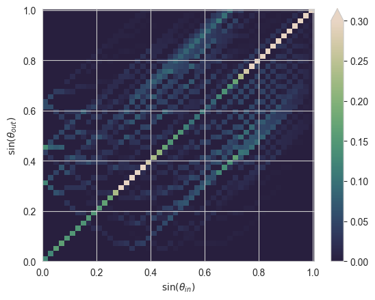

import numpy as np
import os
# solcore imports
from solcore.structure import Layer
from solcore import material
from solcore import si
from rayflare.structure import Interface, BulkLayer, Structure
from rayflare.matrix_formalism import process_structure, calculate_RAT
from rayflare.utilities import get_savepath
from rayflare.transfer_matrix_method import tmm_structure
from rayflare.angles import theta_summary, make_angle_vector
from rayflare.textures import regular_pyramids
from rayflare.options import default_options
from solcore.material_system import create_new_material
import matplotlib.pyplot as plt
import matplotlib as mpl
import seaborn as sns
from sparse import load_npzSection 8: Textured Si
This example is based on Figures 6, 7 and 8 from this paper. This compares three different structures, all based on a 200 micron thick slab of silicon with different surface textures:
- Planar front surface (TMM), crossed grating at rear (RCWA)
- Inverted pyramids on the front surface (RT_Fresnel), planar rear surface (TMM)
- Inverted pyramids on the front surface (RT_Fresnel), crossed grating at rear (RCWA)
The methods which will be used to calculate the redistribution matrices in each case are given in brackets. If case 1 and 2 are calculated first, then case 3 does not require the calculations of any additional matrices, since it will use the rear matrix from (1) and the front matrix from (2).
Setting up
First, importing relevant packages:
To make sure we are using the same optical constants for Si, load the same Si n/k data used in the paper linked above:
create_new_material("Si_OPTOS", "data/Si_OPTOS_n.txt", "data/Si_OPTOS_k.txt",
overwrite=True)Material created with optical constants n and k only.You only need to do this one time, then the material will be stored in Solcore’s material database.
Setting options (taking the default options for everything not specified explicitly):
angle_degrees_in = 8 # same as in Fraunhofer paper
wavelengths = np.linspace(900, 1200, 20) * 1e-9
Si = material("Si_OPTOS")()
Air = material("Air")()
options = default_options()
options.wavelengths = wavelengths
options.theta_in = angle_degrees_in * np.pi / 180 # incidence angle (polar angle)
options.n_theta_bins = 50
options.c_azimuth = 0.25
options.n_rays = 5e5 # number of rays per wavelength in ray-tracing
options.project_name = "OPTOS_comparison"
options.orders = 60 # number of RCWA orders to use (more = better convergence, but slower)
options.pol = "u" # unpolarized light
options.only_incidence_angle = FalseDefining the structures
Now, set up the grating basis vectors for the RCWA calculations and define the grating structure. These are squares, rotated by 45 degrees. The halfwidth is calculated based on the area fill factor of the etched pillars given in the paper.
x = 1000
d_vectors = ((x, 0), (0, x))
area_fill_factor = 0.36
hw = np.sqrt(area_fill_factor) * 500
back_materials = [
Layer(width=si("120nm"), material=Si,
geometry=[{"type": "rectangle", "mat": Air, "center": (x / 2, x / 2),
"halfwidths": (hw, hw), "angle": 45}],
)]Now we define the pyramid texture for the front surface in case (2) and (3) and make the four possible different surfaces: planar front and rear, front with pyramids, rear with grating. We specify the method to use to calculate the redistribution matrices in each case and create the bulk layer.
surf = regular_pyramids(elevation_angle=55, upright=False)
front_surf_pyramids = Interface(
"RT_Fresnel",
texture=surf,
layers=[],
name="inv_pyramids_front_" + str(options["n_rays"]),
)
front_surf_planar = Interface("TMM", layers=[], name="planar_front")
back_surf_grating = Interface(
"RCWA",
layers=back_materials,
name="crossed_grating_back",
d_vectors=d_vectors,
rcwa_orders=20,
)
back_surf_planar = Interface("TMM", layers=[], name="planar_back")
bulk_Si = BulkLayer(201.8e-6, Si, name="Si_bulk")fixed h 0.7140740033710572Now we create the different structures and ‘process’ them (this will calculate the relevant matrices if necessary, or do nothing if it finds the matrices have previously been calculated and the files already exist). We don’t need to process the final structure because it will use matrices calculated for SC_fig6 and SC_fig7.
SC_fig6 = Structure(
[front_surf_planar, bulk_Si, back_surf_grating], incidence=Air, transmission=Air
)
SC_fig7 = Structure(
[front_surf_pyramids, bulk_Si, back_surf_planar], incidence=Air, transmission=Air
)
SC_fig8 = Structure(
[front_surf_pyramids, bulk_Si, back_surf_grating], incidence=Air, transmission=Air
)
process_structure(SC_fig6, options, save_location='current')
process_structure(SC_fig7, options, save_location='current')Making matrix for planar surface using TMM for element 0 in structure
RCWA calculation for element 2 in structure
Ray tracing with Fresnel equations for element 0 in structure
Making matrix for planar surface using TMM for element 2 in structure<__array_function__ internals>:200: RuntimeWarning: invalid value encountered in cast
<__array_function__ internals>:200: RuntimeWarning: invalid value encountered in cast
<__array_function__ internals>:200: RuntimeWarning: invalid value encountered in cast
<__array_function__ internals>:200: RuntimeWarning: invalid value encountered in cast
<__array_function__ internals>:200: RuntimeWarning: invalid value encountered in cast
<__array_function__ internals>:200: RuntimeWarning: invalid value encountered in cast
<__array_function__ internals>:200: RuntimeWarning: invalid value encountered in cast
<__array_function__ internals>:200: RuntimeWarning: invalid value encountered in cast
<__array_function__ internals>:200: RuntimeWarning: invalid value encountered in cast
<__array_function__ internals>:200: RuntimeWarning: invalid value encountered in castCalculating R/A/T
Then we ask RayFlare to calculate the reflection, transmission and absorption through matrix multiplication, and get the required result out (absorption in the bulk) for each cell. We also load the results from the reference paper to compare them to the ones calculated with RayFlare.
results_fig6 = calculate_RAT(SC_fig6, options, save_location='current')
results_fig7 = calculate_RAT(SC_fig7, options, save_location='current')
results_fig8 = calculate_RAT(SC_fig8, options, save_location='current')
RAT_fig6 = results_fig6[0]
RAT_fig7 = results_fig7[0]
RAT_fig8 = results_fig8[0]
sim_fig6 = np.loadtxt("data/optos_fig6_sim.csv", delimiter=",")
sim_fig7 = np.loadtxt("data/optos_fig7_sim.csv", delimiter=",")
sim_fig8 = np.loadtxt("data/optos_fig8_sim.csv", delimiter=",")Finally, we use TMM to calculate the absorption in a structure with a planar front and planar rear, as a reference.
struc = tmm_structure([Layer(si("200um"), Si)], incidence=Air, transmission=Air)
options.coherent = False
options.coherency_list = ["i"]
RAT = tmm_structure.calculate(struc, options)Plotting
Plot everything together, including data from the reference paper for comparison:
palhf = sns.color_palette("hls", 4)
fig = plt.figure()
plt.plot(sim_fig6[:, 0], sim_fig6[:, 1],
"--", color=palhf[0], label="OPTOS - rear grating (1)")
plt.plot(wavelengths * 1e9, RAT_fig6["A_bulk"][0],
"-o", color=palhf[0], label="RayFlare - rear grating (1)", fillstyle="none")
plt.plot(sim_fig7[:, 0], sim_fig7[:, 1],
"--", color=palhf[1], label="OPTOS - front pyramids (2)",)
plt.plot(wavelengths * 1e9, RAT_fig7["A_bulk"][0],
"-o", color=palhf[1], label="RayFlare - front pyramids (2)", fillstyle="none")
plt.plot(sim_fig8[:, 0], sim_fig8[:, 1],
"--", color=palhf[2], label="OPTOS - grating + pyramids (3)")
plt.plot(wavelengths * 1e9, RAT_fig8["A_bulk"][0],
"-o", color=palhf[2],label="RayFlare - grating + pyramids (3)", fillstyle="none",)
plt.plot(wavelengths * 1e9, RAT["A_per_layer"][:, 0], "-k", label="Planar")
plt.legend(loc="lower left")
plt.xlabel("Wavelength (nm)")
plt.ylabel("Absorption in Si")
plt.xlim([900, 1200])
plt.ylim([0, 1])
plt.show()We can see good agreement between the reference values and our calculated values. The structure with rear grating also behaves identically to the planar TMM reference case at the short wavelengths where front surface reflection dominates the result, as expected. Clearly, the pyramids perform much better overall, giving a large boost in the absorption at long wavelengths and also reducing the reflection significantly at shorter wavelengths. Plotting reflection and transmission emphasises this:
fig = plt.figure()
plt.plot(wavelengths * 1e9,RAT_fig6["R"][0],
"-o", color=palhf[0], label="RayFlare - rear grating (1)", fillstyle="none")
plt.plot(wavelengths * 1e9, RAT_fig7["R"][0],
"-o", color=palhf[1], label="RayFlare - front pyramids (2)", fillstyle="none")
plt.plot(wavelengths * 1e9, RAT_fig8["R"][0],
"-o", color=palhf[2], label="RayFlare - grating + pyramids (3)", fillstyle="none")
plt.plot(wavelengths * 1e9, RAT_fig6["T"][0], "--o", color=palhf[0])
plt.plot(wavelengths * 1e9, RAT_fig7["T"][0], "--o", color=palhf[1])
plt.plot(wavelengths * 1e9, RAT_fig8["T"][0], "--o", color=palhf[2])
# these are just to create the legend:
plt.plot(-1, 0, "k-o", label="R", fillstyle="none")
plt.plot(-1, 0, "k--o", label="T")
plt.legend()
plt.xlabel("Wavelength (nm)")
plt.ylabel("Reflected/transmitted fraction")
plt.xlim([900, 1200])
plt.ylim([0, 0.6])
plt.show()Redistribution matrices
Plot the redistribution matrix for the rear grating (summed over azimuthal angles) at 1100 nm:
theta_intv, phi_intv, angle_vector = make_angle_vector(
options["n_theta_bins"], options["phi_symmetry"], options["c_azimuth"])
path = get_savepath("default", options.project_name)
sprs = load_npz(os.path.join(path, SC_fig6[2].name + "frontRT.npz"))
wl_to_plot = 1100e-9
wl_index = np.argmin(np.abs(wavelengths - wl_to_plot))
full = sprs[wl_index].todense()
summat = theta_summary(full, angle_vector, options["n_theta_bins"], "front")
summat_r = summat[: options["n_theta_bins"], :]
summat_r = summat_r.rename({ r"$\theta_{in}$": r"$\sin(\theta_{in})$",
r"$\theta_{out}$": r"$\sin(\theta_{out})$"})
summat_r = summat_r.assign_coords({r"$\sin(\theta_{in})$": np.sin(summat_r.coords[r"$\sin(\theta_{in})$"]).data,
r"$\sin(\theta_{out})$": np.sin(summat_r.coords[r"$\sin(\theta_{out})$"]).data})
palhf = sns.cubehelix_palette(256, start=0.5, rot=-0.9)
palhf.reverse()
seamap = mpl.colors.ListedColormap(palhf)
fig = plt.figure()
ax = plt.subplot(111)
ax = summat_r.plot.imshow(ax=ax, cmap=seamap, vmax=0.3)
plt.show()
Questions
- If you can add only one of the textures (pyramids or a grating), which one is better? Why?
- Why do the structures with a front-surface texture have high reflection at long wavelengths? The anti-reflection properties of pyramids (treated with ray optics) are mostly independent of the wavelength, so why does apparent reflection increase’ near the bandgap of Si?
- Can you explain any of the features present in the angular redistribution matrix of the rear grating surface?